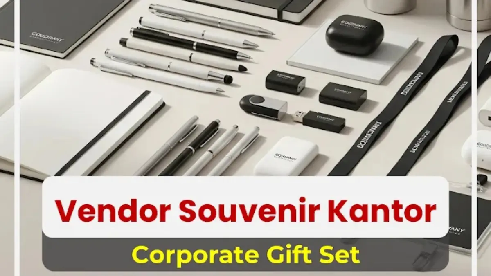

Corporate Gifts ID - Souvenir perusahaan adalah produk eksklusif atau cinderamata fungsional yang diberikan entitas bisnis kepada klien, karyawan, maupun mitra untuk meningkatkan brand awareness, memperkuat hubungan bisnis, dan menyokong strategi pemasaran modern. Dalam strategi corporate branding masa kini, souvenir bukan sekadar hadiah kecil seremonial, melainkan alat komunikasi taktis yang sanggup meninggalkan impresi mendalam dan memupuk loyalitas jangka panjang.
Di era persaingan pasar yang semakin ketat, setiap interaksi bisnis perlu dirancang agar berkesan. Memilih cinderamata yang tepat sangat krusial karena barang tersebut mencerminkan kredibilitas, profesionalisme, dan nilai filosofis perusahaan Anda di hadapan para pemangku kepentingan.
Poin Kunci Pengadaan Souvenir Perusahaan:
- Investasi Branding Nyata: Logo dan pesan promosi pada produk harian memberikan paparan visual brand secara organik dan berkesinambungan.
- Segmentasi Tepat Sasaran: Membedakan kurasi hadiah VIP untuk klien eksekutif dengan paket merchandise distribusi massal pada acara gathering.
- Nilai Guna & Mutu Material: Cinderamata yang awet dan fungsional menjaga citra profesional perusahaan agar tidak terkesan murahan.
- Dukungan Vendor Kredibel: Memastikan vendor memiliki legalitas hukum resmi, kapasitas produksi massal tepat waktu, dan garansi sampel fisik.
Kegunaan & Manfaat Souvenir Perusahaan
Cinderamata korporat memainkan peranan strategis dalam menopang performa bisnis:
- Meningkatkan Brand Awareness: Logo dan identitas visual yang tercetak rapi membuat brand Anda selalu terekam di ingatan penerima dalam rutinitas kerja harian mereka.
- Memperkuat Hubungan dengan Klien & Mitra: Bingkisan yang diberikan pada momentum yang tepat, seperti hari raya atau penandatanganan kontrak, menciptakan ikatan emosional penuh rasa hormat.
- Membangun Loyalitas Internal Karyawan: Apresiasi melalui cinderamata saat perayaan ulang tahun kantor, pencapaian target tahunan, atau onboarding staf baru terbukti memicu motivasi kerja internal.
- Mendukung Strategi Promosi Event: Dalam agenda seminar, pameran expo B2B, atau peluncuran produk baru, suvenir menjadi magnet penarik perhatian pengunjung yang efektif.
Jenis-Jenis Souvenir Perusahaan
Berikut klasifikasi ragam suvenir korporat yang paling efektif dan banyak diminati instansi saat ini:
1. Souvenir Premium
Kategori ini ditujukan secara khusus bagi jajaran direksi, tamu VIP, dan mitra strategis. Prioritas utamanya adalah eksklusivitas, material mewah, dan kemasan prestisius.
- Powerbank custom berkapasitas besar dengan logo grafir atau LED menyala.
- Buku catatan agenda kulit asli atau PU leather premium bersampul hardcover emboss.
- Gift set eksekutif tematik dalam kotak hardbox berlapis beludru.

Ragam pilihan souvenir perusahaan fungsional dan ramah lingkungan siap cetak logo untuk event korporat.
2. Souvenir Fungsional
Sangat ideal untuk seluruh karyawan atau peserta event massal karena dapat langsung dipakai dalam aktivitas harian:
- Tumbler stainless custom pengatur suhu vakum ganda.
- Tas tote bag kanvas tebal dengan sablon presisi tinggi.
- Pulpen metalik berbobot mantap yang nyaman digenggam saat rapat.
3. Souvenir Ramah Lingkungan (Eco-Friendly)
Mendukung komitmen keberlanjutan dan meningkatkan nilai ESG (Environmental, Social, Governance) perusahaan di hadapan publik:
- Set perlengkapan makan bambu atau sedotan stainless food grade.
- Mug kopi serat gandum (wheat straw) ramah lingkungan.
- Buku agenda dari kertas daur ulang dan pensil tanam benih.
4. Souvenir Digital / e-Gift
Opsi modern tanpa repot kendala logistik, sangat relevan untuk ekosistem kerja jarak jauh (remote):
- Voucher belanja digital marketplace ternama.
- E-voucher langganan aplikasi produktivitas atau media hiburan.
- Kartu hadiah elektronik (e-money custom) siap pakai.
| Jenis Souvenir | Kisaran Harga Satuan | Tingkat Eksklusivitas | Kesesuaian Event |
|---|---|---|---|
| Souvenir Premium | Rp150.000 - Rp600.000+ | Sangat Eksklusif | Client VIP Meeting, Seremoni MoU, Hadiah Direksi |
| Souvenir Fungsional | Rp35.000 - Rp125.000 | Umum & Populer | Gathering Karyawan, Training, Pameran Dagang |
| Ramah Lingkungan (Eco) | Rp25.000 - Rp95.000 | Modern & Bernilai ESG | Program CSR, Kampanye Go-Green, Seminar Publik |
| Digital / e-Gift | Fleksibel / Sesuai Saldo | Praktis & Instan | Virtual Event, Reward Bulanan, Kontes Media Sosial |
Tips Memilih Souvenir Perusahaan yang Tepat
Agar anggaran cinderamata memberikan timbal balik maksimal bagi reputasi perusahaan, perhatikan kiat praktis berikut:
- Pahami Profil Target Penerima: Kenali karakteristik penerima. Tamu kehormatan tentu memerlukan jenis cenderamata yang berbeda dibanding peserta lomba rekreasi staf.
- Harmonisasikan dengan Identitas Merek: Warna kemasan, teknik cetak, dan gaya produk harus selaras dengan pedoman identitas merek korporasi Anda.
- Prioritaskan Daya Tahan & Mutu Fisik: Barang berkualitas mencerminkan reputasi positif perusahaan. Sebaliknya, produk yang cepat rusak dapat mencoreng kredibilitas brand.
- Alokasi Anggaran Cerdas: Lebih baik membagikan satu jenis produk bermutu tinggi daripada paket cinderamata banyak item tetapi berkualitas rendah.
- Pertimbangkan Nilai Keunikan & Tren: Barang yang memiliki keunikan desain akan memicu penerima untuk mengunggahnya ke media sosial secara sukarela.
Rekomendasi Souvenir Perusahaan Terbaik
Berikut deretan produk yang konsisten mencatatkan tingkat kepuasan tertinggi dalam pengadaan korporat:
- Tumbler Vakum Stainless Steel: Solusi ramah lingkungan yang digunakan di meja kerja setiap hari, menjamin logo Anda senantiasa terlihat.
- Powerbank Fast Charging: Sangat diminati para profesional yang memiliki mobilitas tinggi dalam tugas luar kantor.
- Gift Set Eksekutif (Agenda Kulit + Pulpen Logam + Flashdisk): Paket klasik nan mewah yang dikemas dalam boks magnetik eksklusif.
- Kalender Meja Custom: Media promosi konstan dengan biaya hemat yang menghiasi meja kerja klien selama 365 hari penuh.
- Hampers Korporat Musiman: Sarana silaturahmi bisnis yang paling efektif menjelang momen hari raya maupun penutupan tahun anggaran.
Strategi Menggunakan Souvenir untuk Branding & Marketing
Manfaatkan cinderamata sebagai motor penggerak kampanye komersial:
- Program Retensi Pelanggan Setia: Bagikan merchandise edisi khusus bagi pelanggan loyal untuk mempertahankan nilai retensi akun bisnis Anda.
- Daya Tarik Booth Pameran: Manfaatkan suvenir berkualitas sebagai magnet interaksi agar calon klien bersedia berkunjung dan berdiskusi di stan pameran Anda.
- Integrasi Kampanye Digital via QR Code: Sematkan tautan kode QR pada kemasan produk yang mengarah langsung ke katalog digital, video profil korporat, atau formulir penawaran promo.
Cara Memilih Vendor Souvenir Perusahaan Terpercaya
Hasil akhir cinderamata sangat bergantung pada profesionalisme mitra vendor yang Anda tunjuk. Pastikan vendor pilihan Anda memenuhi kriteria berikut:
- Memiliki entitas hukum resmi, rekening giro perusahaan, dan sanggup menerbitkan faktur pajak elektronik (e-Faktur).
- Sanggup menyediakan sampel bukti cetak (mockup fisik) sebelum proses produksi partai besar dijalankan.
- Memiliki portofolio pengerjaan proyek instansi pemerintah dan korporasi terkemuka.
- Memberikan kepastian tenggat waktu produksi (SLA) yang mengikat dengan jaminan garansi retur jika terjadi cacat produksi.
- Didukung tim layanan pelanggan yang cepat tanggap dan komunikatif dalam memberikan konsultasi solusi pengadaan.
Pertanyaan Seputar Souvenir Perusahaan (FAQ)
Souvenir perusahaan adalah instrumen investasi branding jangka panjang yang bernilai tinggi. Ketelitian dalam mengurasi jenis produk, menjaga mutu material, hingga memilih mitra vendor yang tepercaya akan secara nyata mengangkat derajat prestise perusahaan Anda di mata seluruh penerimanya.
Wujudkan souvenir perusahaan eksklusif yang memancarkan citra terbaik institusi Anda bersama Corporate Gifts ID. Konsultasikan rancangan desain dan dapatkan penawaran harga terbaik sekarang juga.